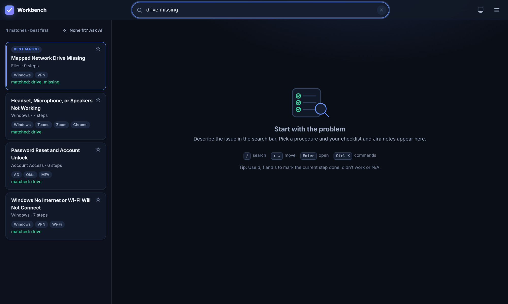
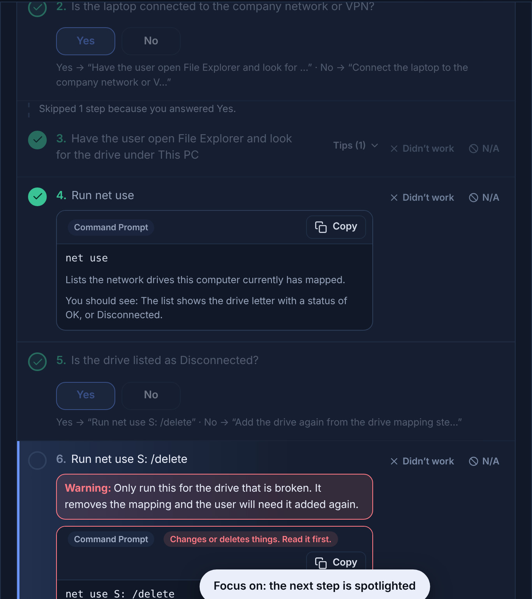
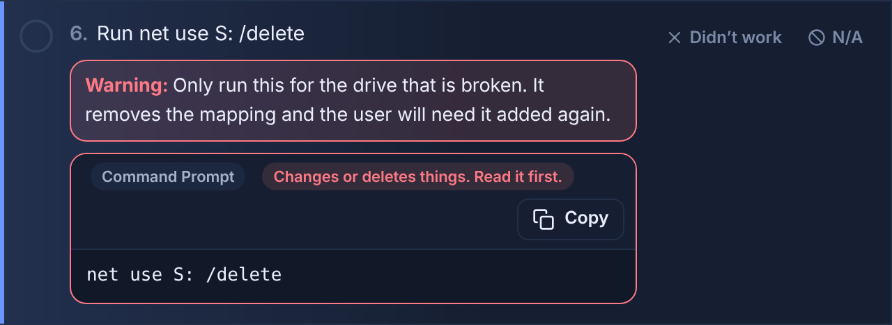
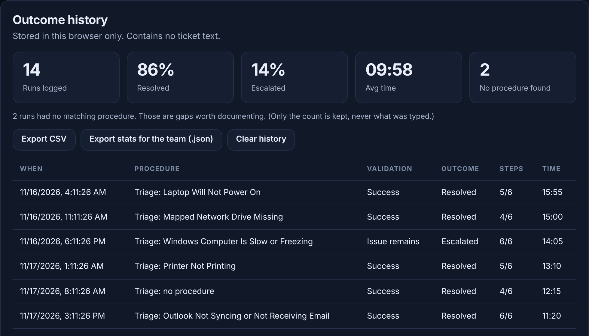
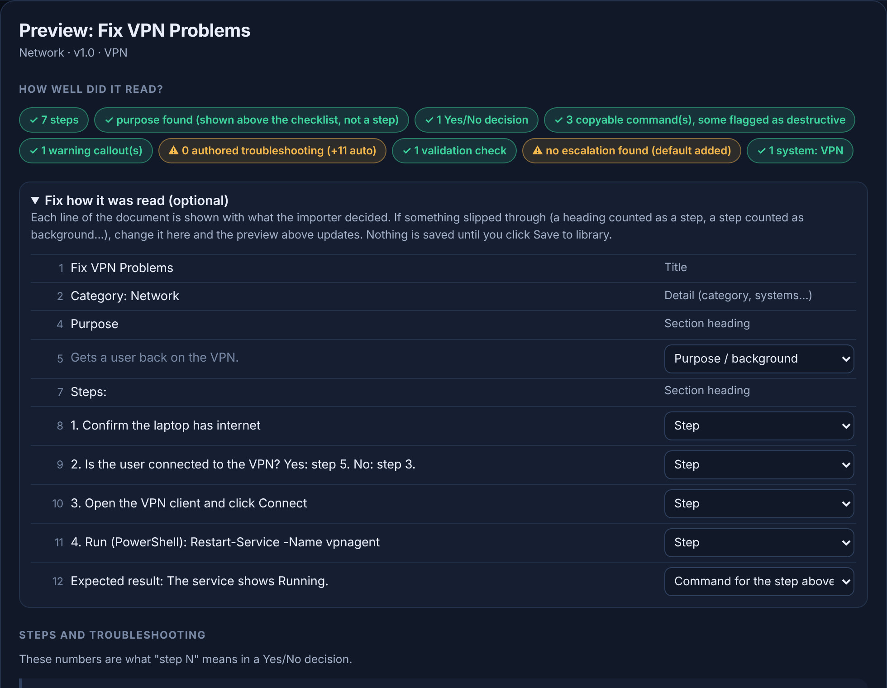
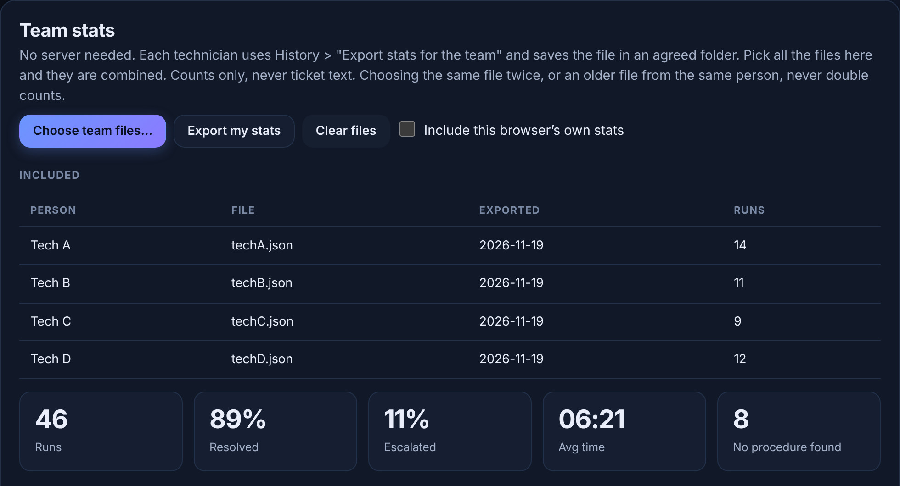
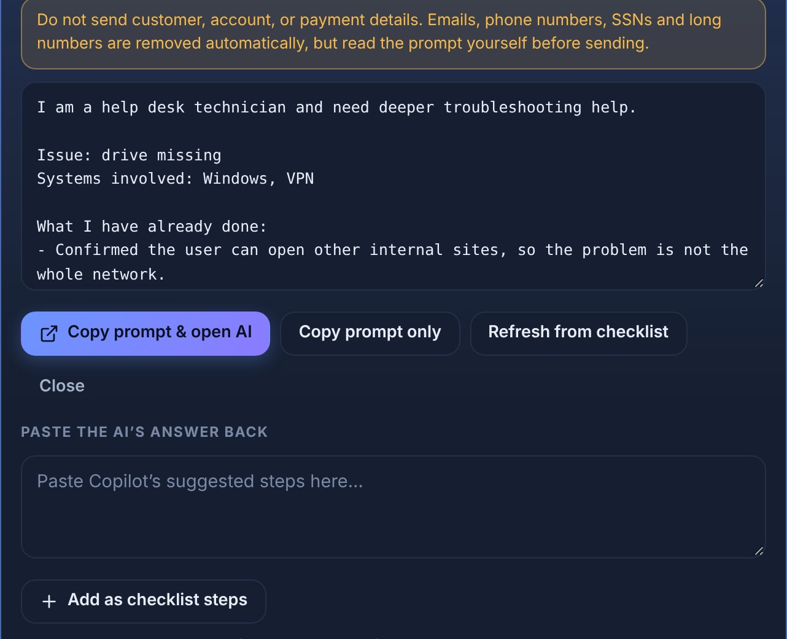
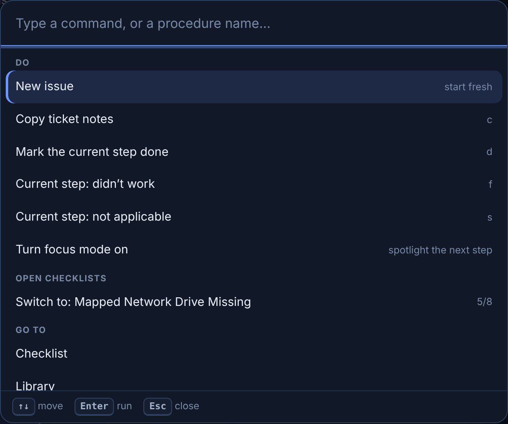

Every ticket gets worked twice
I work on a help desk, so I know this one from the inside. A ticket is worked once to fix it and again to write it up: troubleshoot, retell the whole thing to an AI assistant, then paste the result into Jira.
THE MIDDLE TWO STEPS ARE THE SAME WORK, DONE TWICE.
Two people, two write-ups
The same fix gets documented differently depending on who retells it, so the next person can’t tell what was already tried.
Search first, help second
A new technician has to dig through a document library and guess which version is current before they can start helping.
Nothing counts what’s missing
When there’s no procedure for a problem, nothing records it, so the same gap keeps coming back.
Type the problem. Follow the steps. The notes write themselves.
Describe it in plain words
“Can’t sign in to Outlook.” It matches on the symptom, understands related words, and forgives a typo, so nobody needs to know a procedure’s name.
Work the checklist
Built from the team’s own procedures. Mark each step done, didn’t work, or not applicable. Yes/No questions skip what doesn’t apply.
Copy the notes
A plain bulleted list of what was actually done, ready for Jira. If it wasn’t ticked, it isn’t in the notes.

Search is the front door. Matches appear as you type, with the reason each one matched.
Designed inside a cautious IT environment
No installs. No server. No new accounts. A free AI assistant with no API. Procedures living in documents. A team of four. These weren’t obstacles to design around. They became the design.
The calls I made, and what each one cost
One HTML file. No install, no server.
An IT team can review one file. Anyone can open it, and it can live on a shared drive.
Trade-offNo live sync between people. I solved that later with a “team copy” and counts-only exports.
AI by copy and paste, not an API
The free assistant has no API, and copy and paste keeps ticket content in the technician’s hands. The prompt is pre-written, cleaned of emails, phone numbers, IP addresses, user folders and computer names, and shown before anything is copied.
Trade-offOne extra paste. The cleaning is a safety net, not a guarantee, and the app says so.
A deterministic importer, not an AI one
It works offline, gives the same result every time, and a person can see why. A “Fix how it was read” panel lists every line with what it decided and lets you change any of it before saving.
Trade-offIt’s heuristic, so it will misread some documents. The override panel is the safety net.
Store counts, never ticket text
Privacy by design. History keeps only which procedure, the outcome and the timing. A test asserts that what’s typed in the search box never reaches long-term storage.
Trade-offNo per-ticket history to browse back through.
Copy commands. Never run them.
Each command gets a copy button, a plain line on what it does and what to expect, and a red label if it deletes or changes things. The tool never executes anything.
Trade-offOne more click for the technician, on purpose.
Share a library with no server
A “team copy” of the app carries the procedures. Each person exports a counts-only stats file, and the newest file per person wins, so importing twice never double counts.
Trade-offManual refresh. Honest about it in the UI and the docs.
Make it feel good without slowing anyone down
A tool used all day should feel good. A Focus mode spotlights the next step, Ctrl+K runs any command, and Save & next has an Undo. A Fun / Calm switch keeps the sparkle optional and demo-safe, and everything respects “reduce motion”.
Trade-offMore states to test, so each one has a test.
Be honest in the interface
If browser storage is full, it says “NOT saved” instead of pretending. The weekly “time saved” line is labelled an estimate. AI suggestions are marked as AI-suggested in the checklist and the notes.
Trade-offLess polished-looking. Far more trustworthy.
What I chose not to build
Saying no was most of the product work. Each of these was a real option.
What it does
Guided, one step at a time
Focus mode spotlights the next step and softens the rest. Questions skip what doesn’t apply and say how many steps they skipped. For computer problems it asks one thing: which laptop and model.
- Keys D F S Y N mark steps without the mouse
- The tab title shows progress, and gets a red dot if an issue remains

Commands you can trust
Copy exactly the command, with what it does and what you should see. Anything that deletes or changes things carries a red warning.
- The tool never runs a command
- Warnings are written in the procedure and shown on the step

Gaps become a to-do list
When no procedure exists, the tool starts a general first-response checklist. What worked can be saved as a draft for the next person. History counts how often there was no procedure.
- Counts only, never what was typed
- The same data shows which steps most often fail

Write procedures the way you already do
Import Word files, saved web pages or plain text. Three optional patterns add Yes/No questions, commands and warnings. If it misreads a line, you fix it before anything is saved.
- Is the user on VPN? Yes: step 5. No: step 3.
- Unclear decisions are never guessed: they stay normal steps with a warning

One file, one team view
The design lets four people open the same file from a shared drive at once, because nobody writes to it. Each person’s notes stay on their own computer. A small counts-only file from each of them combines into one picture.
- Importing the same file twice never double counts
- Practice mode lets a new hire train with nothing logged

When the checklist isn’t enough
“Issue remains” opens the AI panel by itself with the prompt already written from what you did and what failed. Paste the answer back and it becomes checklist steps, clearly labelled AI-suggested.
- Personal details removed first, and you read it before you send
- Nothing is ever sent automatically

Fast, and quiet when you want it
Ctrl+K opens every command: switch tabs, copy notes, change theme, accent color or density. Fun mode adds a small celebration and a pulse on the progress ring. Calm mode turns all of it off.
- Light, dark and auto themes, four accent colors
- Text contrast meets WCAG AA in every theme

What I can measure so far
Where it went wrong, and what I changed
When browser storage filled up, the app still said “Saved” while losing data. A stress test exposed it. Now it says “NOT saved”, shows a storage meter, and the test fails if it ever pretends again.
“Hang” matched “change”. Search matched inside words. I moved to word-boundary matching, then added typo tolerance carefully, so “outlok” finds Outlook but unrelated words don’t.
Muted text in light mode was 3.5:1 against a 4.5:1 standard. I fixed 21 failures across themes and accents, then wrote a test that checks every combination.
Searching the command palette for something that didn’t exist showed only “Nothing matches that”. Found by actually using it. It now offers two next moves: search the checklist, or start general triage.
Two buttons showed “…” as literal text. Caught while taking screenshots for a presentation. Fixed, with a test that scans the source so it can’t return.
“Hold the power button” came out as “Completed: Hold the power button”. The notes writer didn’t know the verb. I widened it and added a test that checks every step in every sample procedure.
A pilot, then the ideas that need permission
Two weeks, four technicians, real tickets
Measure how long the notes take, how often tickets escalate, how many had no procedure, and which steps most often fail. If it doesn’t help, stop. It’s one file, so nothing is lost.
Where it could go
Read procedures straight from SharePoint. A Chrome extension that drops notes into Jira. A direct, approved AI connection. A live shared library. None are needed to start. Each needs one specific approval.
Built with Claude Code as an AI pair programmer, under my product direction. I specified every feature from help desk experience, reviewed each release in a real browser, and nothing merged without tests.
See it work
The demo runs entirely in your browser with made-up sample procedures. Nothing you type leaves your computer. Try searching “drive missing”, then press D, Y, D.